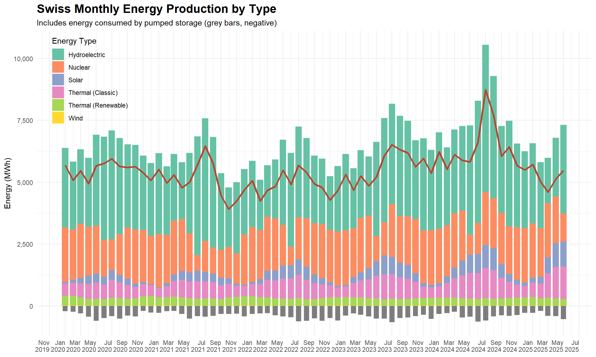
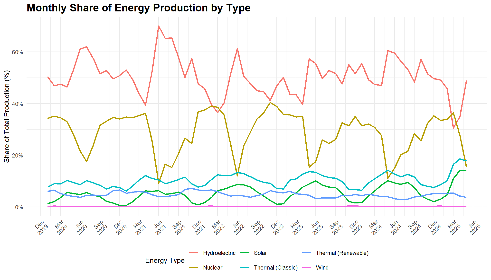
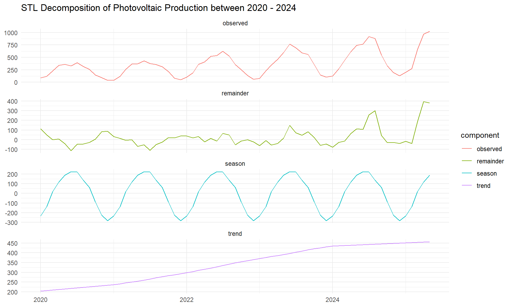
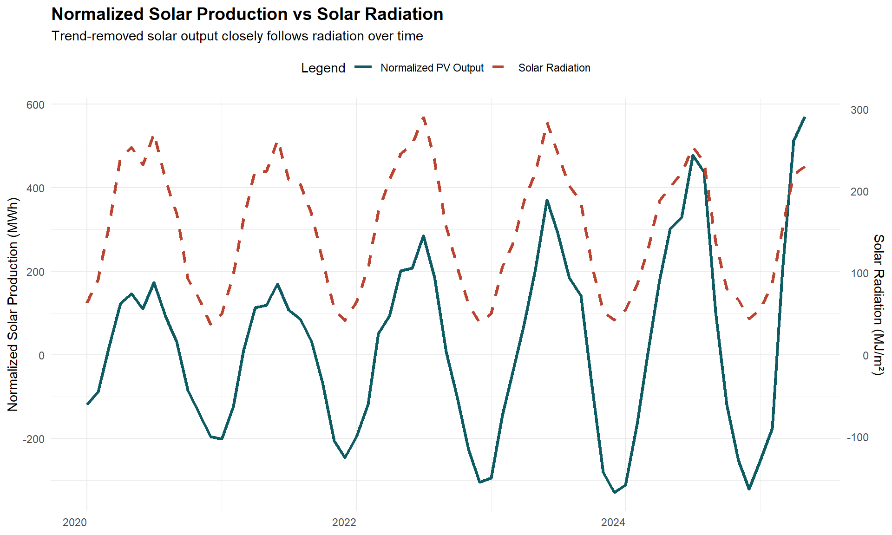
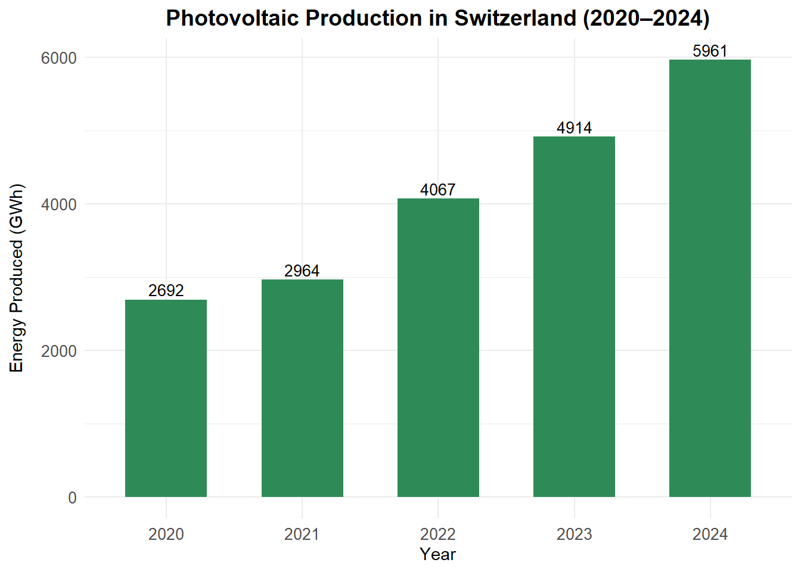
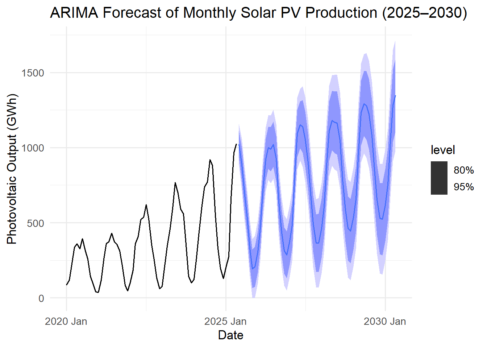
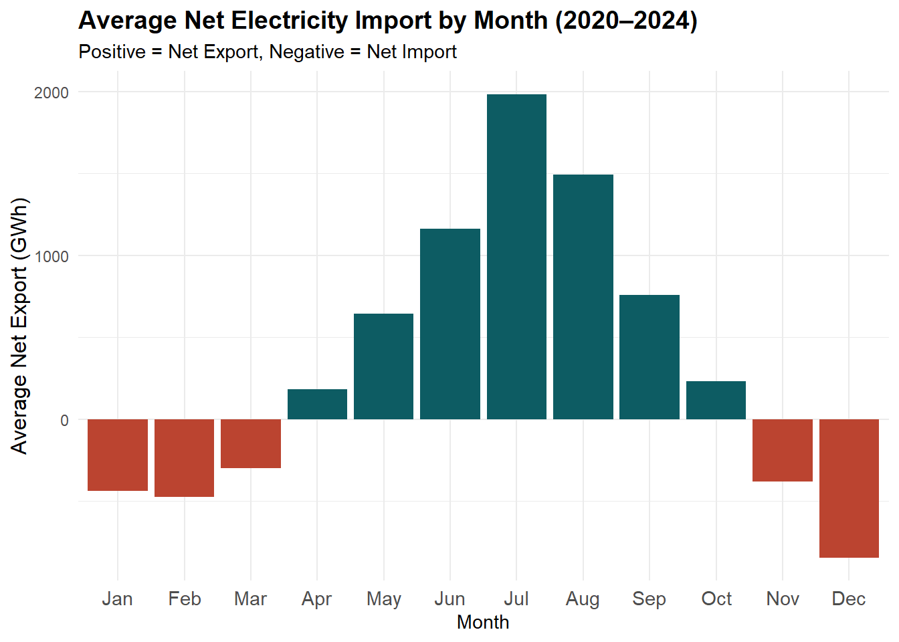
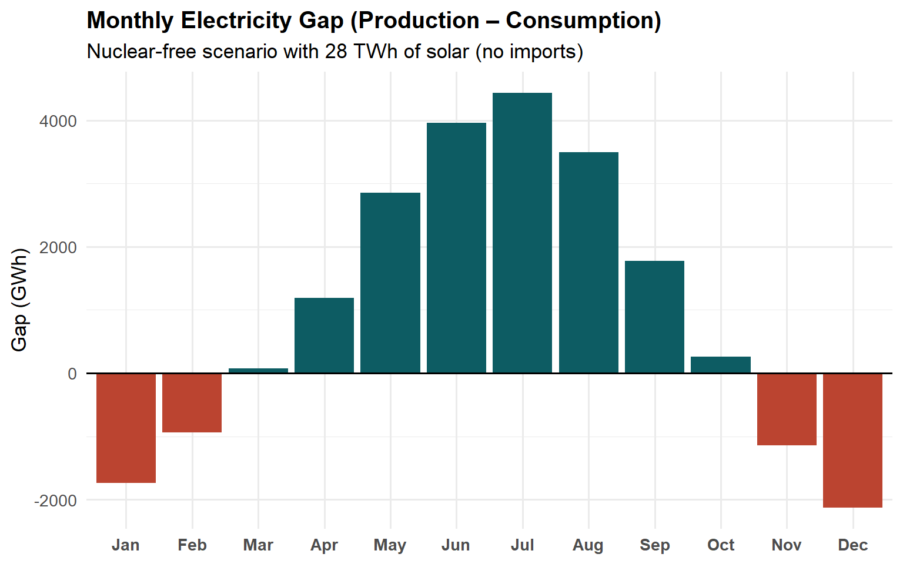
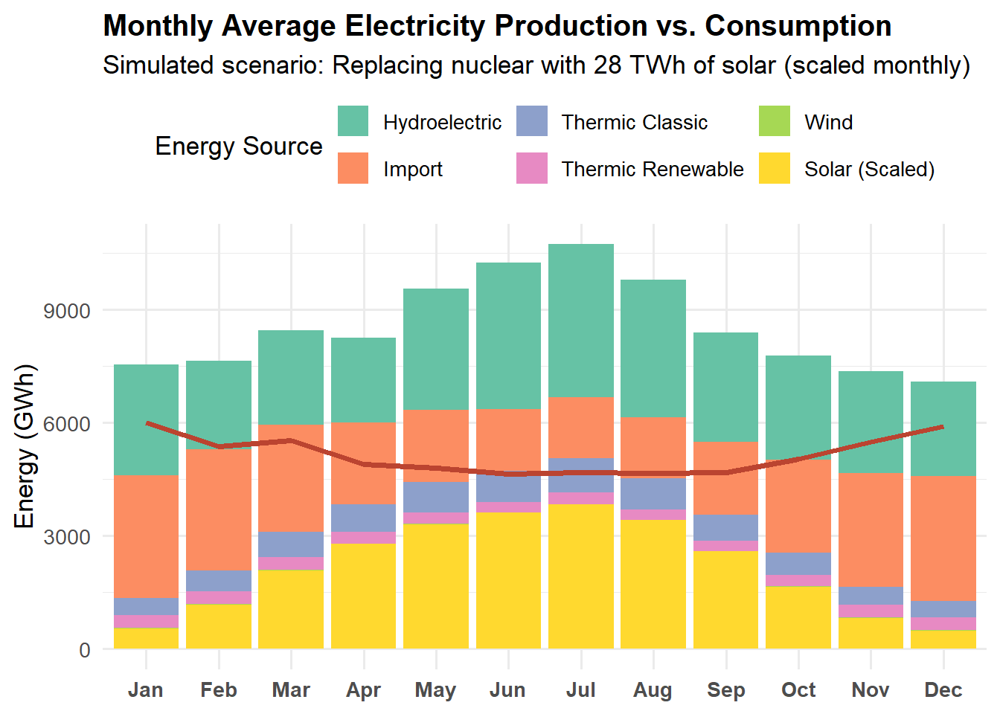

| Metadata: Monthly Energy Production (Switzerland) | |||
| Variable | Description | Source | Unit |
|---|---|---|---|
| date_month | Monthly timestamp (first day of each month, parsed from multilingual date string) | Swiss Federal Office of Energy (SFOE) | YYYY-MM-DD |
| date_label | Month label in short format (e.g., Jan-2020) for plotting or reporting | Swiss Federal Office of Energy (SFOE) | string |
| hydroelectric | Monthly electricity production from hydroelectric sources (in GWh) | Swiss Federal Office of Energy (SFOE) | GWh |
| nuclear | Monthly electricity production from nuclear power plants (in GWh) | Swiss Federal Office of Energy (SFOE) | GWh |
| thermic_clasique | Electricity production from classic thermal (fossil fuel-based) sources (in GWh) | Swiss Federal Office of Energy (SFOE) | GWh |
| thermic_renewable | Electricity production from renewable thermal sources (e.g., biogas, waste) (in GWh) | Swiss Federal Office of Energy (SFOE) | GWh |
| wind_thurbine | Electricity generated from wind turbines (in GWh) | Swiss Federal Office of Energy (SFOE) | GWh |
| photovoltaic | Electricity produced from photovoltaic (solar) sources (in GWh) | Swiss Federal Office of Energy (SFOE) | GWh |
| total | Total electricity production from all sources (hydro, nuclear, thermal, renewables) (in GWh) | Swiss Federal Office of Energy (SFOE) | GWh |
| acumulation_pumping | Electricity used for pumping water into accumulation lakes (in GWh, i.e., storage) | Swiss Federal Office of Energy (SFOE) | GWh |
| net_production | Net electricity production (total production - pumping/storage use) (in GWh) | Swiss Federal Office of Energy (SFOE) | GWh |
| import | Gross imports of electricity from neighboring countries (in GWh) | Swiss Federal Office of Energy (SFOE) | GWh |
| export | Gross exports of electricity to neighboring countries (in GWh) | Swiss Federal Office of Energy (SFOE) | GWh |
| country_consumtion | Total electricity used domestically, including grid and industrial use (in GWh) | Swiss Federal Office of Energy (SFOE) | GWh |
| losses | Grid losses (distribution/transmission) (in GWh) | Swiss Federal Office of Energy (SFOE) | GWh |
| final_consumtion | Final consumption by Swiss end users (households, services, industry) (in GWh) | Swiss Federal Office of Energy (SFOE) | GWh |
| export_import | Net importer/exporter status (1 = net importer, 0 = net exporter) | Swiss Federal Office of Energy (SFOE) | binary (0/1) |
Swiss Electricity System Under Transition
From Nuclear to Solar Power
Preface
Switzerland stands at a turning point in its energy transition. With a national policy to phase out nuclear power by 2050, and growing urgency around climate change, the country faces a critical challenge:
Can it maintain energy security while transitioning to a renewable electricity system?
What began as a data-driven exploration of Swiss energy production soon evolved into a focused investigation of one key question:
Can solar photovoltaic (PV) energy scale enough to replace nuclear power?
This report combines exploratory data analysis, a study of solar output vs. radiation patterns, and a forward-looking scenario :
Will Switzerland be able to replace nuclear power with solar, or will it need to rely on imports, hydro expansion, and storage?
Data Sources & Metadata
This appendix provides detailed metadata for the datasets used in this analysis. Each table is shown in a scrollable box to keep the layout compact.
- Energy data (Swiss Federal Office of energy): Monthly Energy Production (hydro, nuclear, solar, etc.).
NoteClick to expand: Metadata for Monthly Production Dataset
- MeteoSwiss OGD-NBCN: Monthly Solar Irradiation.
NoteClick to expand: Metadata for Monthly Solar Irradiation Dataset
| Metadata: Solar Radiation (MeteoSwiss Aggregated Data) | ||||
| Variable | Description | Source | processing_steps | Unit |
|---|---|---|---|---|
| date_month | First day of each month (used as timestamp for monthly aggregated data) | meteoswiss.ch | Dates represent the aggregation level (monthly); derived from daily values | YYYY-MM-DD |
| global_radiation | Monthly average global solar radiation across all Swiss MeteoSwiss stations (in MJ/m²) | meteoswiss.ch | Downloaded monthly global radiation values from multiple stations; averaged across stations per month | MJ/m² |
Both data sets are aggregated to monthly frequency and merged on a monthly date column.
- Energy data (Swiss Federal Office of energy): Swiss Nuclear Power Plants Dataset.
NoteClick to expand: Metadata for Nuclear Production Dataset
| Metadata: Swiss Nuclear Power Plants Dataset | |
| Variable | Description |
|---|---|
| year | Calendar year |
| beznau1_production_gwh | Beznau I: Annual energy production (GWh) |
| beznau1_capacity_mwe | Beznau I: Installed capacity (MWe) |
| beznau1_util_pct | Beznau I: Capacity utilization rate (%) |
| beznau2_production_gwh | Beznau II: Production (GWh) |
| beznau2_capacity_mwe | Beznau II: Capacity (MWe) |
| beznau2_util_pct | Beznau II: Utilization (%) |
| muhleberg_production_gwh | Mühleberg: Production (GWh) |
| muhleberg_capacity_mwe | Mühleberg: Capacity (MWe) |
| muhleberg_util_pct | Mühleberg: Utilization (%) |
| gosgen_production_gwh | Gösgen: Production (GWh) |
| gosgen_capacity_mwe | Gösgen: Capacity (MWe) |
| gosgen_util_pct | Gösgen: Utilization (%) |
| leibstadt_production_gwh | Leibstadt: Production (GWh) |
| leibstadt_capacity_mwe | Leibstadt: Capacity (MWe) |
| leibstadt_util_pct | Leibstadt: Utilization (%) |
| total_production_gwh | Sum of all reactors’ production (GWh) |
| total_capacity_mwe | Sum of installed capacities (MWe) |
| total_util_pct | Aggregate capacity utilization (%, rough) |
Introduction
Switzerland’s electricity mix is unique in Europe, with a strong reliance on hydropower and a legacy of nuclear energy. This has enabled the country to maintain a low-carbon electricity system for decades.
However, under the Swiss Energy Strategy 2050, the government plans to phase out nuclear energy and significantly increase the share of renewables - especially solar power.
This report investigates whether this transition is technically feasible, focusing on three key questions:
- How does Switzerland currently produce electricity, and how does this vary seasonally?
- What is the real potential of solar PV, given seasonal variation in sunlight?
- Can solar realistically replace nuclear capacity, or will Switzerland depend on imports and hydro?
We use data from 2020 to 2024 - the period when Switzerland began officially recording renewable production - to assess energy dynamics, simulate future scenarios, and evaluate feasibility.
NoteWhy Start in 2020?
Switzerland began systematically reporting renewable energy production in monthly detail starting in 2020. As such, this year marks the most reliable starting point for consistent renewable energy tracking in the Swiss energy system.
NoteWhy We Focus on Solar and Nuclear
Hydro power contributes over 50% of Switzerland’s electricity today, but expanding it further is challenging due to ecological protections, geographic limitations, and social resistance to large infrastructure projects.
As a result, this analysis focuses on the evolving relationship between solar energy and nuclear phase-out, while treating hydro as a relatively stable, non-expanding baseline.
Energy Production (2020–2024)
Switzerland began consistently recording monthly renewable energy production in 2020, providing a solid foundation for analyzing how the country generates electricity across sources and seasons.
This section explores production from hydroelectric, nuclear, solar, thermal (classic and renewable), and wind sources using monthly data from 2020 to mid-2025. The goal is to understand:
- How electricity production is distributed across sources
- How seasonality affects each energy type
- What happens to nuclear output when renewables peak
- How pumped storage is used to balance the grid
These dynamics set the stage for assessing whether solar energy can realistically scale to replace nuclear output in the coming decades.
Monthly Energy Production in Switzerland
The chart below shows monthly electricity generation by energy type, from January 2020 to May 2025. Each color band represents a specific energy source.
Additional features:
- A red line shows net production (after subtracting pumped storage use)
- Grey bars below zero represent electricity used for pumped storage (i.e., storing excess electricity by pumping water uphill)

- Hydroelectric power shows a strong seasonal pattern, peaking between May and August due to snowmelt and rainfall.
- Nuclear energy remains relatively stable but shows regular dips around May–June, corresponding with planned maintenance.
- Solar output is strongly seasonal, increasing during spring and peaking in summer.
- Thermal production (classic and renewable) remains steady throughout the year.
- Wind power contributes very little to the energy mix.
- Pumped storage usage (grey bars) increases during high-production periods - storing surplus electricity for later use.
- The net production line reflects how pumped storage smooths out seasonal volatility in supply.
Together, these patterns highlight Switzerland’s ability to dynamically balance its energy system - a vital feature as the country phases out stable nuclear baseload.
Seasonality of Energy Production
To better understand how Switzerland’s electricity mix changes over time, we visualize each energy source’s monthly share of total production, rather than absolute values.
This approach helps uncover:
- Seasonal trends
- Trade-offs between energy types (e.g., hydro vs. nuclear)
- Complementarity between renewables
The chart below shows monthly percentage shares for each production type from January 2020 to mid-2025.

The chart shows that:
- Hydroelectric (red line) shows a strong and consistent seasonal pattern:
- Peaks in late spring to early summer (May–July)
- Drops in autumn and winter, especially December–February
- Nuclear (gold line) behaves in an inverse seasonal pattern:
- Most stable across months, but shows predictable dips in May–June, corresponding with scheduled maintenance outages
- These dips are well-aligned with hydro and solar peaks, indicating planned coordination
- Solar (cyan line) rises steadily from March, peaking in June–July, then drops in autumn and nearly vanishes in December–January.
- Thermal (classic and renewable) sources remain relatively flat and act as baseline supplements, especially in winter.
- Wind contributes a negligible share, fluctuating around 0.2% with no clear seasonal pattern.
Overall, the chart illustrates a deliberate balancing strategy:
- Switzerland reduces nuclear output when renewable supply increases, especially in summer.
- This modulation enhances grid flexibility, an essential feature as the country prepares to phase out nuclear energy
Correlation Between Energy Sources
The seasonal analysis suggested that nuclear production often declines when renewable output (hydro and solar) increases. To test this relationship more formally, we calculate Pearson correlation coefficients between monthly shares of:
- Hydroelectric vs. Nuclear
- Solar vs. Nuclear
Why do this?
Correlation helps quantify the degree of inverse movement between sources. If two sources are strongly negatively correlated, it means when one rises, the other tends to fall - suggesting substitution or balancing behavior.
For Switzerland, this matters because:
- If nuclear consistently steps down when renewables rise, it shows the grid is already designed to integrate renewables without overcapacity.
- It also highlights how nuclear provides flexibility today, which will need to be replaced by other mechanisms (imports, storage, or flexible hydro) after the phase-out.
| Source Pair | Pearson Correlation |
|---|---|
| Hydroelectric vs Nuclear | −0.774 |
| Solar vs Nuclear | −0.566 |
The results confirm our observations:
Hydroelectric vs. Nuclear:
A strong negative correlation (r = -0.774).
When hydro production increases in spring and summer, nuclear output reliably decreases - mainly due to planned maintenance and grid balancing.Solar vs. Nuclear:
A moderate negative correlation (r = -0.566).
Solar output is still a smaller share of the mix than hydro, but the inverse relationship suggests nuclear is also adjusted downward during solar peaks.
In short, Switzerland’s nuclear fleet already functions as a flexible buffer against seasonal renewable fluctuations.
Replacing this role will be a major challenge post-2050, as solar and hydro cannot “self-balance” without external support (imports, long-duration storage, or expanded hydro flexibility).
NotePlanned Nuclear Maintenance and Seasonal Renewables
Swiss nuclear plants typically undergo annual inspections and fuel replacement in late spring to early summer. This timing aligns with peak hydro and solar output, allowing nuclear capacity to temporarily decrease without compromising grid stability. This synergy reflects how Switzerland already leverages seasonal renewables to reduce nuclear reliance. This pattern will become increasingly critical as the phase-out proceeds.
Nuclear Power Plants Overview
Nuclear energy has been a cornerstone of Switzerland’s electricity system for decades, providing stable, low-carbon baseload power. Today, the country operates four reactors across three sites:
- Beznau I & II (Aargau) - the world’s oldest commercial reactors still in operation.
- Gösgen (Solothurn).
- Leibstadt (Aargau).
The Mühleberg plant (Bern) was permanently decommissioned in December 2019, becoming the first Swiss nuclear reactor to shut down.
Between 2020 and 2024, nuclear contributed on average 22,190 GWh, representing between 28.4% (2024) and 35.8% (2022) of Switzerland’s total electricity production.
Switzerland has decided on a gradual nuclear phase-out, meaning no new reactors will be built, but the existing plants can continue operating as long as they remain safe.
Geographic Overview
The map below shows the locations and status of Swiss nuclear power plants.
- Green markers: operational reactors
- Red markers: decommissioned sites
Hovering over a site displays details on average production (2020–2024), canton, and operational history.
Note: Coordinates for the nuclear power plants were obtained from public sources1:
NoteNuclear Phase-Out Policy
Under the Swiss Energy Strategy 2050, no new nuclear plants will be constructed.
Existing plants can continue operating indefinitely, provided safety is guaranteed.
This flexible phase-out contrasts with some countries (e.g., Germany), where fixed shutdown dates were set.
Photovoltaic Performance and Solar Radiation
Switzerland has expanded its installed solar PV capacity rapidly in recent years. However, raw production values reflect both:
- Growing infrastructure (more panels installed)
- Natural variation in solar radiation (seasonal cycles, weather)
To isolate how much solar performance depends on sunlight rather than capacity growth,we compare solar production with measured solar radiation between 2020 and 2024.
Method: STL Decomposition
We apply STL decomposition (Seasonal-Trend decomposition using LOESS) to photovoltaic production:
- Trend: captures the long-term growth in installed PV capacity
- Seasonal: captures regular annual cycles (sunlight availability)
- Remainder: captures short-term variation and anomalies
By recombining the seasonal + remainder components, we obtain a normalized PV output — representing solar generation patterns independent of capacity growth.

Comparison: Solar Radiation vs Normalized PV Output
The figure below compares normalized PV output (MWh) to measured solar radiation (MJ/m²). A dual-axis plot aligns the two series, making their seasonal co-movement visible.

Correlation Analysis
To quantify this relationship, we compute the Pearson correlation coefficient between:
- Normalized PV output, and
- Measured solar radiation
The resulting correlation is: 0.896.
As expected this indicates:
- This very strong positive correlation shows that solar PV production is tightly coupled to radiation availability.
- Seasonal radiation patterns, not infrastructure, explain the shape of PV output.
- Capacity growth only scales the curve upwards — it does not change the fundamental seasonal imbalance.
Seasonal Distribution of PV Energy Production
When averaged across 2020–2024, the seasonal breakdown of PV output is:
- Winter (Dec–Feb): 8.3%
- Spring (Mar–May): 31.6%
- Summer (Jun–Aug): 40.8%
- Autumn (Sep–Nov): 19.3%
These numbers are telling us that:
- Production is heavily concentrated in summer (nearly half of annual PV output).
- Winter output is very limited, despite being the period of highest demand (heating + low daylight).
- This seasonal mismatch is the core structural challenge for replacing nuclear with solar.
PV Contribution Over Time
Switzerland’s photovoltaic (PV) generation has grown rapidly in recent years.To illustrate this trend, we track annual PV production (GWh) and its share of total electricity production from 2020 to 2024.
The chart shows steady year-on-year growth, with no reversals.
This suggests strong policy and market momentum supporting PV expansion.
Yet, even with this rapid growth:
- PV accounted for only ~7.4% of Switzerland’s electricity in 2024
- Nuclear, by contrast, still supplied ~28% over the same period

Forecasting Solar PV Production (2025–2030)
In this section, we use time series modeling to forecast monthly solar PV production in Switzerland from 2025 to 2030, based on trends observed between 2020 and mid-2025.
Methodology
We use an ARIMA (Auto-Regressive Integrated Moving Average) model, a widely used statistical technique for modeling time series data. This model captures:
- Trend (long term increase in PV output due to growning Installations)
- Seasonality (cyclical patterns due to solar radiation patterns)
- Short-term dependencies (month to month autocorrelation in output)
Assumptions
This forecast is based on the critical assumptions that the PV capacity conitnues to grow at a similar pace as observed in 2020 to mid 2025.
The model does not account for:
- Policy changes,
- Supply chain disruptions,
- Technological breakthroughs,
- Accelerated or stalled installation rates.
It is a s trend projection, with no technical potential simulation or policy scenarios.
Interpretation:
The seasonality is clearly preserved in the forecast: output peaks in summer (May–July) and drops in winter (December–January).
The amplitude of production increases over time, consistent with observed growth in installed capacity.
by 2030 the PV production can peak to 1600 Ghw during the summer months, potentially being able to supply over 10 TWh/year.

NoteWhat Do the Confidence Intervals Mean?
The shaded ribbons around the forecast represent confidence intervals:
- 80% interval (darker blue): there’s an 80% chance the true value falls inside.
- 95% interval (lighter blue): there’s a 95% chance the true value falls inside.
These intervals widen over time to reflect increasing uncertainty in long-term forecasts.
Growth vs. Nuclear Comparison
At the current pace (~1 TWh added annually), Switzerland would need about 22 years to scale PV production enough to match the annual nuclear output (≈22–23 TWh).
However, this projection assumes:
- Linear growth (no acceleration or policy-driven scale-up)
- No seasonal adjustment (ignores the winter shortfall identified earlier)
In reality, scaling PV alone is insufficient: seasonal storage, imports, and flexible hydro will be essential to cover winter deficits.
NoteWhy Annual Growth is Misleading
Annual growth rates can create the illusion that solar can fully replace nuclear. But electricity systems are seasonal, not annual.
Even if PV reaches 22–23 TWh/year, the winter contribution will remain very small.
Thus, the transition challenge is not just about producing “enough” yearly solar - it’s about producing it when it’s needed most.
Electricity Imports, Exports & Grid Balance
Switzerland operates one of Europe’s most reliable electricity systems. This reliability depends not only on domestic production but also on cross-border electricity flows, which help balance seasonal supply and demand.
In this section, we examine how Switzerland balances its grid by looking at:
- The overall balance of production, imports, and consumption
- Seasonal patterns in imports and exports
- The implications of losing stable nuclear generation
Grid Balance Check
We verify whether Switzerland’s electricity system is operationally balanced using the identity:
Grid Balance = (Net Production + Imports) – (Exports + Consumption)
The balance equals zero in all months, confirming that the Swiss grid is consistently balanced - total inflows match total outflows.
This highlights Switzerland’s strong integration with the European grid and its ability to maintain operational stability.
Average Net Electricity Imports by Month (2020–2024)
The figure below shows average monthly net imports (exports-imports), averaged across 2020–2024:
- Positive values = Net Export
- Negative values = Net Import
Winter (Dec–Feb): Switzerland is a net importer of electricity, reflecting higher demand and limited solar output.
Spring and Summer (Apr–Aug): The country becomes a net exporter, supported by strong hydroelectric flows and solar generation.
Autumn (Sep–Nov): The balance moves closer to zero, with mixed import/export activity.
This seasonal pattern confirms Switzerland’s reliance on imports during winter deficits, while acting as a net exporter during periods of renewable abundance.

Why Imports Will Matter
Today, nuclear power provides stable year-round baseload, covering winter demand when solar is minimal. With nuclear gradually phased out:
- Winter deficits will deepen (solar provides only ~8.3% of annual output in winter vs ~40.8% in summer).
- Hydropower cannot fully compensate, as its seasonal peaks align with summer.
- Imports will become increasingly critical for:
- Security of supply
- Grid stability
- Market integration with neighboring countries
Replacing Nuclear with Solar: Feasibility and Limitations
To test whether solar could fully replace nuclear energy, we simulate a nuclear-free Swiss grid where:
- Nuclear production (~22–23 TWh/year) is removed.
- Solar PV is scaled up to ~28 TWh/year (≈ nuclear + current PV), distributed monthly based on real PV production profiles (2020–2024).
- Hydroelectric, thermal, and wind remain fixed at their 2020–2024 averages.
- Imports are excluded at first, to reveal the true domestic balance.
This scenario represents a simple “solar-for-nuclear substitution” without assuming additional hydro expansion, storage, or demand-side flexibility, second and tertiary reserves, etc.
Winter Gaps Without Nuclear
In this scenario, domestic production falls short of consumption by up to 2.1 TWh in December and 1.7 TWh in January. Across the winter months (Nov–Feb), the total deficit reaches ~5.7 TWh.
By contrast, summer months (May–Aug) show large surpluses of ~13 TWh, underscoring the structural seasonal mismatch.
The chart reinforces the conclusion:
- solar can match nuclear’s annual output,
- but not its seasonal reliability.

Imports as one of the Balancing Mechanism
Switzerland already relies on imports in winter and exports in summer to balance its grid. In a nuclear-free system, this reliance would increase sharply, with imports becoming the primary tool for covering winter deficits.
The chart on the right illustrates this point: imports (orange bars) rise steeply in December–February, while in May–August solar and hydro surpluses reduce the need for imports.
While technically feasible thanks to Switzerland’s strong interconnections with neighboring countries, this dependence raises key risks:
- Energy security: reliance on France, Germany, and Italy during critical months.
- Market volatility: higher price exposure if Europe faces simultaneous winter shortages.
- Geopolitical exposure: reduced autonomy when neighboring systems are also under pressure.

Conclusion
This analysis shows that while solar can replace nuclear in annual totals, it cannot guarantee seasonal reliability. Without nuclear, Switzerland faces deficits of ~5–6 TWh in winter (Nov–Feb) and surpluses of ~13 TWh in summer.
Today, imports already bridge these gaps. In a nuclear-free future, however, imports would become the backbone of winter security. While technically feasible, this creates dependence on neighboring systems (France, Germany, Italy) and heightens exposure to market volatility and geopolitical risks.
At the same time, Switzerland is investing in domestic balancing solutions:
- Pumped-storage: the 900 MW Nant de Drance plant came online in 20222, offering capacity comparable to a nuclear reactor such as Gösgen. Further projects are under study in the Grimsel region3.
- Battery storage: projects such as Alpiq’s Gondo and Lausanne batteries demonstrate the growing role of short-term flexibility4.
- Solar expansion: according to Energie Zukunft Schweiz, Switzerland has a technical PV potential of 9–11 GW5. Unlocking this potential requires stronger political and regulatory frameworks. In parallel, federal studies suggest that ~6% of Swiss land area is suitable for PV6, though deployment faces constraints from heritage protection and land-use policies.
- Smart-grid upgrades: ongoing digitalization projects aim to improve flexibility, demand management, and grid resilience7.
Switzerland’s energy transition is therefore not just about adding solar capacity. It is a system challenge: aligning seasonal production with demand, balancing imports with domestic flexibility, and integrating storage and smart-grid technology.
The path forward will require a portfolio approach:
- Seasonal imports (short- to medium-term necessity)
- Expansion of solar and flexible hydropower
- Long-duration storage (pumped-hydro, future technologies)
- Smart grids and efficiency gains
Ultimately, success will not be measured by annual generation totals, but by ensuring secure electricity supply in winter, when the system is under the greatest strain.
Footnotes
Coordinates for nuclear power plants in Switzerland: Beznau, Gösgen, Leibstadt, and Mühleberg.↩︎
Nant de Drance SA – The power plant↩︎
Alpiq – Battery storage in Lausanne↩︎
SFOE – Smart grid updates↩︎